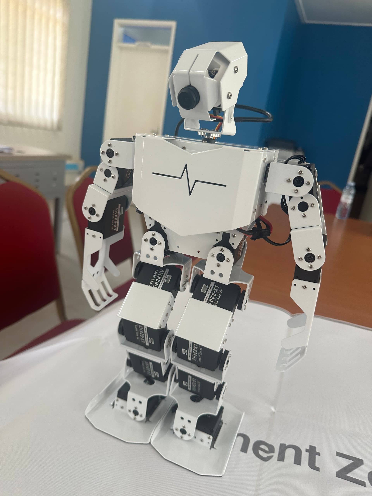

What is Artificial Intelligence (AI)
AI is like teaching a computer to think, learn, and solve problems,
just like a human would. It's the magic behind things like voice assistants,
self-driving cars, and even robots that can speak different languages.
AI learns from data, gets smarter over time, and helps us
make decisions faster and more accurately.
AI is transforming industries and daily life,
making it one of the most exciting fields to explore today.
Why Learn AI
AI is the future. It’s changing the way we work, communicate, and solve problems.
Learning AI gives you a competitive edge, opens doors to cutting-edge careers,
and allows you to be part of a community shaping the future.
What We Do in Our AI Chapter
In our AI chapter, you’ll:
- Collaborate on Projects: Work with peers to build AI models, apps, and more.
- Gain Hands-On Experience: Learn and practice coding, data analysis, and machine learning with real tools.
- Attend Workshops and Talks: Stay updated with the latest AI trends from guest speakers and experts.

Grow with Us
"Imagine a world where AI-powered robots aren’t just in sci-fi movies but part of our daily lives!
From household tasks to complex surgeries, these robots learn, adapt, and “think” to a degree,
making life easier and safer. With advances in AI, robots are even starting to understand emotions and communicate more naturally.
They’re here to work alongside us, unlocking possibilities we never dreamed of. Ready to meet the robots of tomorrow?"

No matter your background, if you’re curious about AI and eager to learn, you’re welcome here!
We offer resources and support for everyone, from beginners to advanced learners.
AI SKILLS ARE APPLICABLE IN ALL FIELDS SUCH AS;
- Banking
- medicine
- Marketing
- Health care, among others
no matter your course, AI is a fundermental tool because of its verstility
AI application in building Tianah

.AI was used to build Tianah by integrating natural language processing and speech recognition,
enabling her to understand and speak both French and English.
Machine learning models help her generate accurate responses,
while speech synthesis allows her to converse fluently in both languages.
Students are still working on local language integration with Tianah